Working with Latent Distributions
JoonHo Lee
2026-02-13
Source:vignettes/latent-distributions.Rmd
latent-distributions.Rmd1. Overview
The sim_latentG() function generates latent abilities
(person parameters
)
for IRT simulation studies. It implements the population model:
where is a flexible distribution family that can take many different shapes while maintaining rigorous standardization properties.
Estimated reading time: 20–25 minutes.
This vignette covers:
- The pre-standardization principle
- Available distribution shapes (12 built-in + custom)
- Customizing shape parameters
- Creating custom mixture distributions
- Adding covariate effects
- Visualization tools
- How latent shape affects achievable reliability
For the complete applied workflow that uses
sim_latentG() as part of reliability-targeted simulation,
see vignette("applied-guide").
2. The Pre-Standardization Principle
A key design feature of sim_latentG() is
pre-standardization: every built-in distribution shape
is mathematically constructed to have mean 0 and variance
1 before any scaling is applied.
This ensures that:
- Changing the shape does not inadvertently change the scale
- The
sigmaparameter directly controls the standard deviation - Comparisons across shapes are meaningful
The generated abilities follow:
where with and .
2.1 Why This Matters
In traditional simulation approaches, changing the latent distribution often changes both the shape and the scale simultaneously. For example, switching from to changes not just the shape but also the variance.
With pre-standardization, you can study the effect of distributional shape on IRT estimation while holding variance constant – a cleaner experimental design.
3. Basic Usage
# Generate 1000 standard normal abilities
sim_normal <- sim_latentG(n = 1000, shape = "normal", seed = 42)
# Examine the result
print(sim_normal)
#> Latent Ability Distribution (G-family)
#> =======================================
#> Shape : normal
#> n : 1000
#> Target mu : 0.000
#> Target sigma: 1.000
#>
#> Sample Moments:
#> Mean : -0.0258
#> SD : 1.0025
#> Skewness : -0.0038
#> Kurtosis : 0.1286 (excess)The output shows:
- Target mu/sigma: The requested location and scale
- Sample Moments: Empirical mean, SD, skewness, and excess kurtosis
4. Available Distribution Shapes
sim_latentG() provides 12 built-in shapes, each
pre-standardized to mean 0 and variance 1.
4.1 Standard Normal
The baseline case:
sim_normal <- sim_latentG(n = 2000, shape = "normal", seed = 1)
plot(sim_normal, show_normal = TRUE)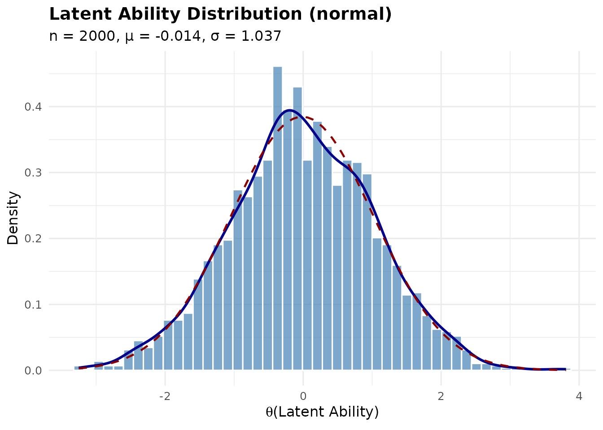
4.2 Bimodal Distribution
A symmetric two-component Gaussian mixture, useful for representing populations with two distinct subgroups (e.g., native vs. non-native speakers).
Mathematical construction:
The component variance ensures .
sim_bimodal <- sim_latentG(n = 2000, shape = "bimodal", seed = 1)
plot(sim_bimodal, show_normal = TRUE)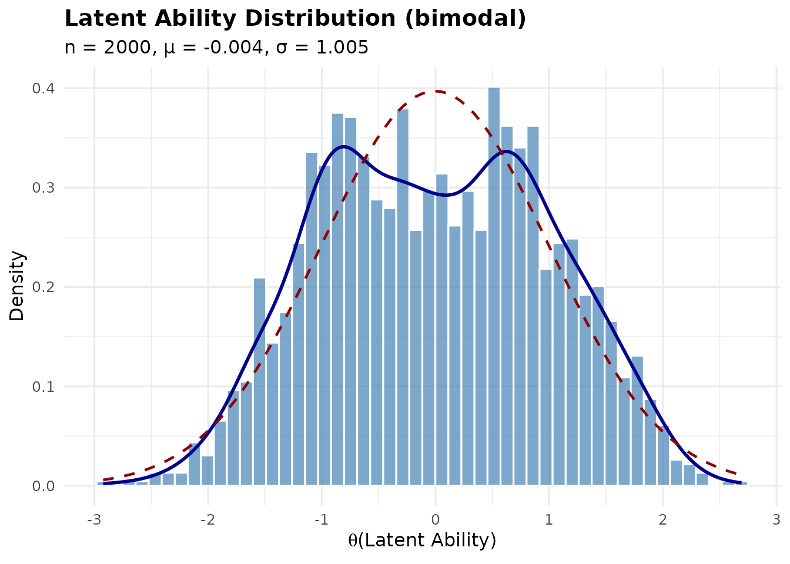
Customizing mode separation:
The delta parameter controls how far apart the modes are
():
# Wider separation
sim_bimodal_wide <- sim_latentG(
n = 2000,
shape = "bimodal",
shape_params = list(delta = 0.95),
seed = 1
)
plot(sim_bimodal_wide, show_normal = TRUE)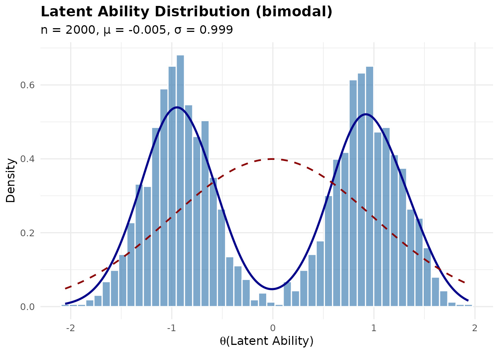
4.3 Trimodal Distribution
A symmetric three-component mixture with a central peak and two side peaks.
Mathematical construction:
Components at with weights where .
Component variance:
sim_trimodal <- sim_latentG(n = 2000, shape = "trimodal", seed = 1)
plot(sim_trimodal, show_normal = TRUE)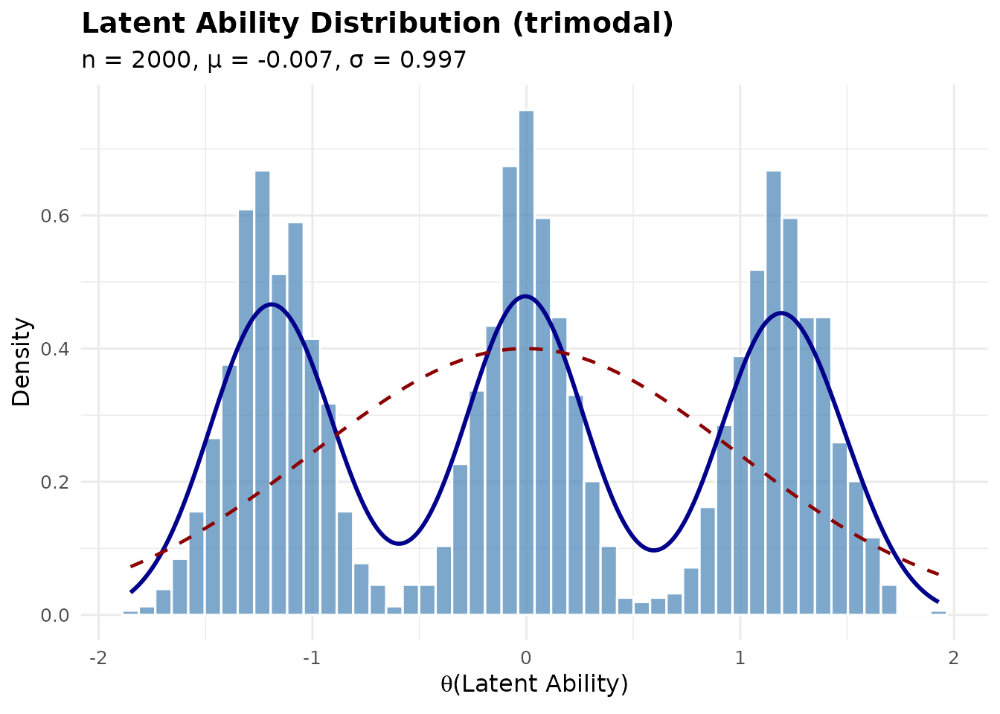
Customizing:
# Stronger central peak
sim_trimodal_central <- sim_latentG(
n = 2000,
shape = "trimodal",
shape_params = list(
w0 = 0.5, # Weight of central component (default: 1/3)
m = 1.3 # Location of side components (default: 1.2)
),
seed = 1
)
plot(sim_trimodal_central, show_normal = TRUE)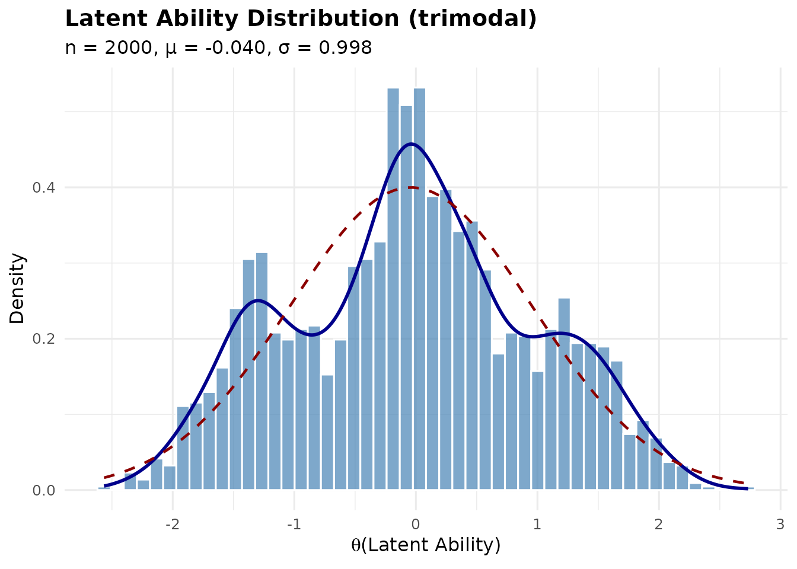
4.4 Multimodal (Four Components)
A symmetric four-component mixture with modes at .
sim_multi <- sim_latentG(n = 2000, shape = "multimodal", seed = 1)
plot(sim_multi, show_normal = TRUE)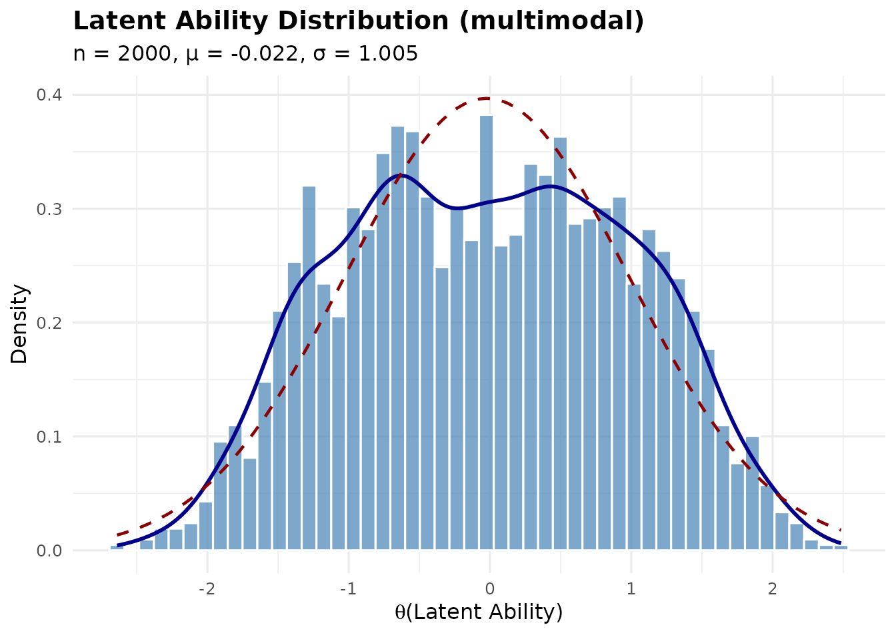
4.5 Skewed Distributions
Right-skewed (skew_pos): Based on standardized Gamma distribution:
This has and for any .
sim_skew_pos <- sim_latentG(n = 2000, shape = "skew_pos", seed = 1)
plot(sim_skew_pos, show_normal = TRUE)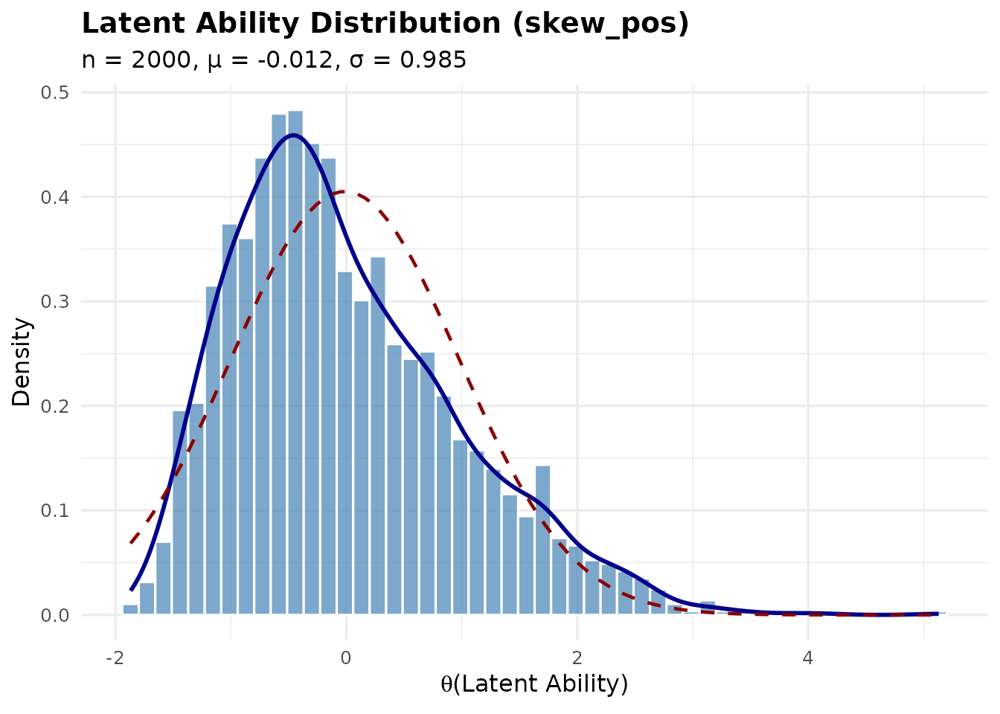
Left-skewed (skew_neg): Simply the negation of the right-skewed distribution.
sim_skew_neg <- sim_latentG(n = 2000, shape = "skew_neg", seed = 1)
plot(sim_skew_neg, show_normal = TRUE)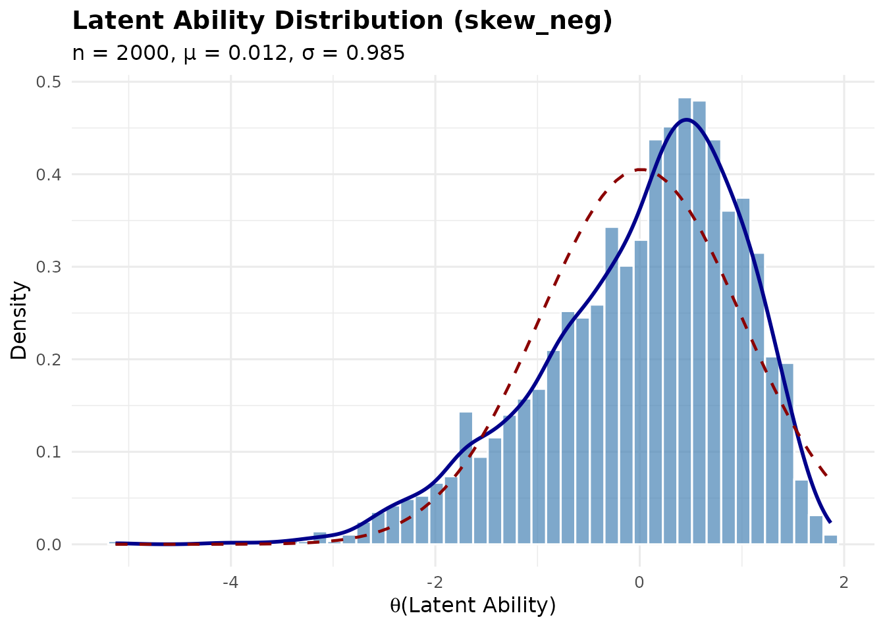
Controlling skewness magnitude:
The k parameter (Gamma shape) controls skewness –
smaller values mean more skewed:
# More extreme skewness (k = 2)
sim_very_skew <- sim_latentG(
n = 2000,
shape = "skew_pos",
shape_params = list(k = 2),
seed = 1
)
cat(sprintf("Default k=4 skewness: %.3f\n", sim_skew_pos$sample_moments$skewness))
#> Default k=4 skewness: 0.812
cat(sprintf("k=2 skewness: %.3f\n", sim_very_skew$sample_moments$skewness))
#> k=2 skewness: 1.2444.6 Heavy-Tailed Distribution
Based on standardized Student-t:
This has for .
sim_heavy <- sim_latentG(n = 2000, shape = "heavy_tail", seed = 1)
plot(sim_heavy, show_normal = TRUE)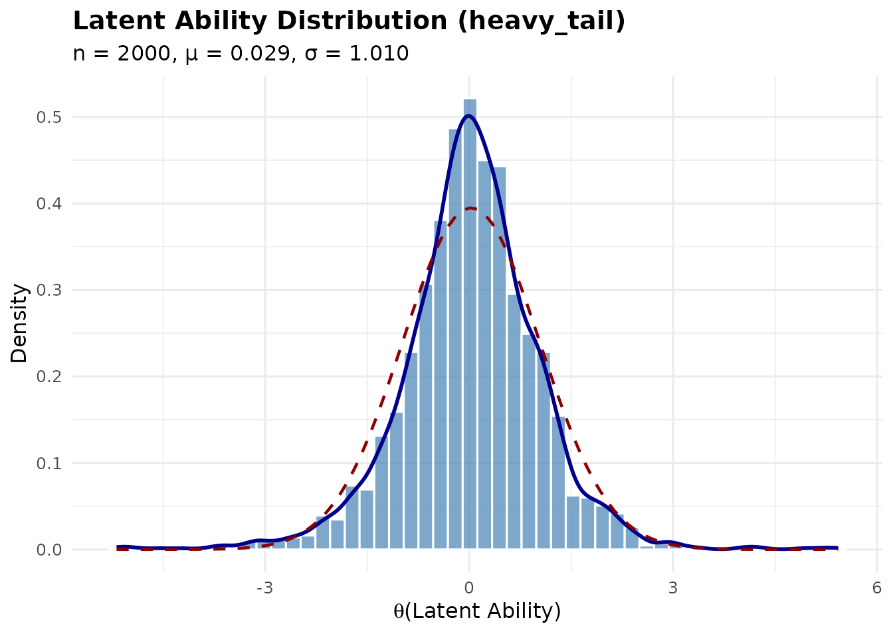
Controlling tail heaviness:
The df parameter (degrees of freedom) controls tail
weight – smaller values mean heavier tails:
# Very heavy tails (df = 3)
sim_very_heavy <- sim_latentG(
n = 2000,
shape = "heavy_tail",
shape_params = list(df = 3),
seed = 1
)
cat(sprintf("Default df=5 kurtosis: %.3f\n", sim_heavy$sample_moments$kurtosis))
#> Default df=5 kurtosis: 2.924
cat(sprintf("df=3 kurtosis: %.3f\n", sim_very_heavy$sample_moments$kurtosis))
#> df=3 kurtosis: 7.9564.7 Light-Tailed (Platykurtic) Distribution
A mixture distribution approximating a platykurtic shape (negative excess kurtosis).
sim_light <- sim_latentG(n = 2000, shape = "light_tail", seed = 1)
plot(sim_light, show_normal = TRUE)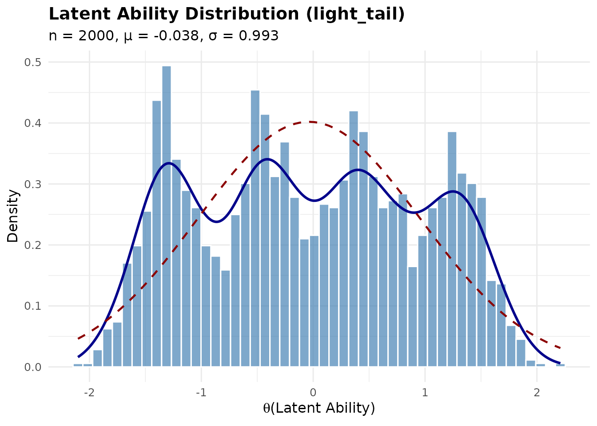
4.8 Uniform Distribution
Uniform on , which has mean 0 and variance 1.
sim_uniform <- sim_latentG(n = 2000, shape = "uniform", seed = 1)
plot(sim_uniform, show_normal = TRUE)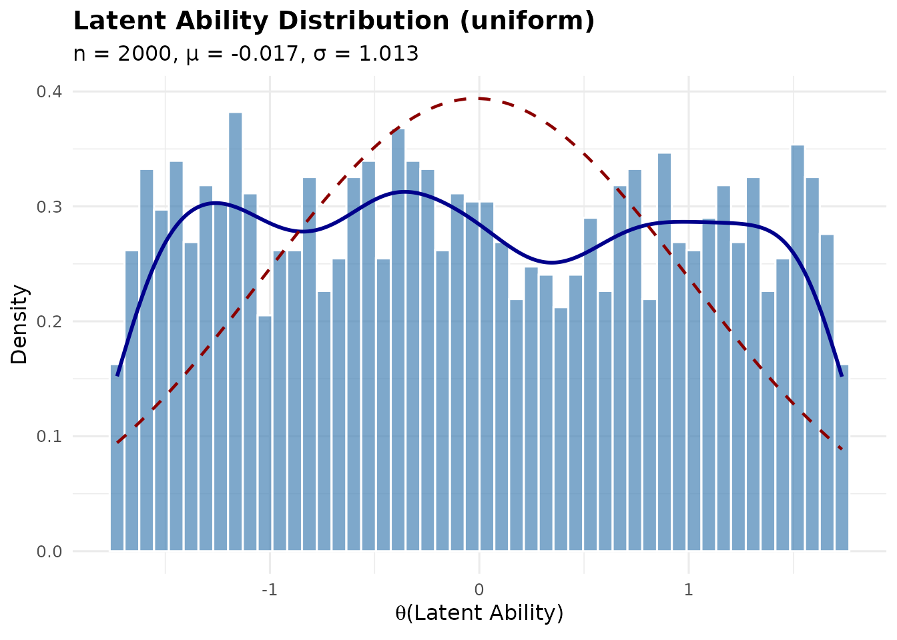
4.9 Floor and Ceiling Effects
These represent situations where there is a concentration of examinees at one end of the ability distribution.
Floor effect: Heavy component near the lower bound (e.g., many low-ability students in a difficult test)
sim_floor <- sim_latentG(n = 2000, shape = "floor", seed = 1)
plot(sim_floor, show_normal = TRUE)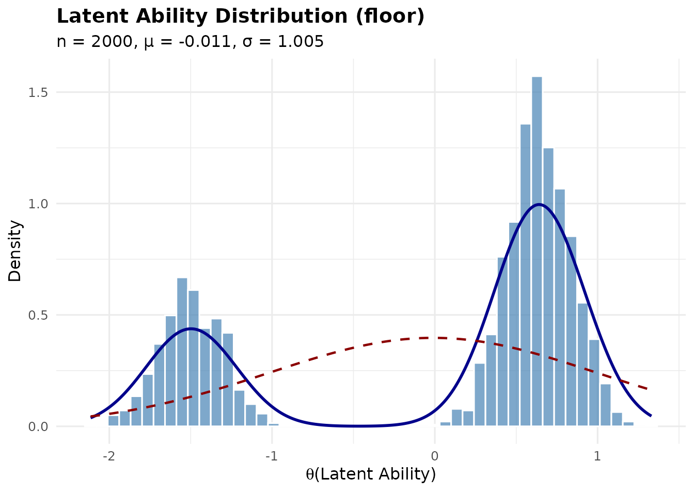
Ceiling effect: Heavy component near the upper bound (e.g., many high-ability students in an easy test)
sim_ceiling <- sim_latentG(n = 2000, shape = "ceiling", seed = 1)
plot(sim_ceiling, show_normal = TRUE)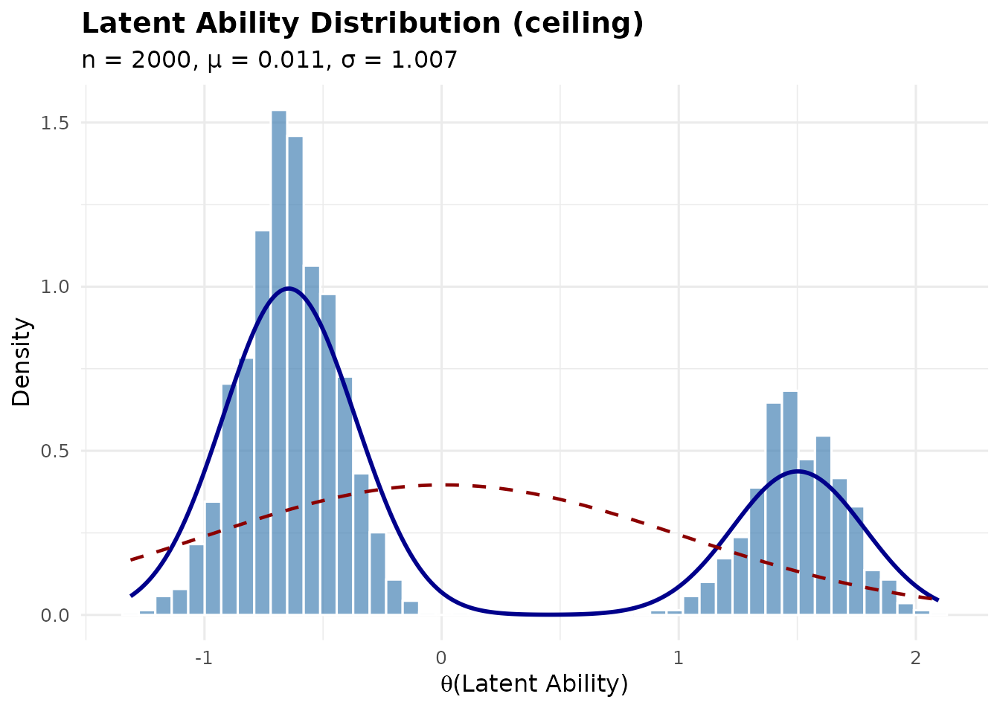
5. Comparing Multiple Shapes
The compare_shapes() function provides a convenient way
to visualize multiple distributions side-by-side:
compare_shapes(
n = 3000,
shapes = c("normal", "bimodal", "trimodal",
"skew_pos", "heavy_tail", "uniform"),
sigma = 1,
seed = 42
)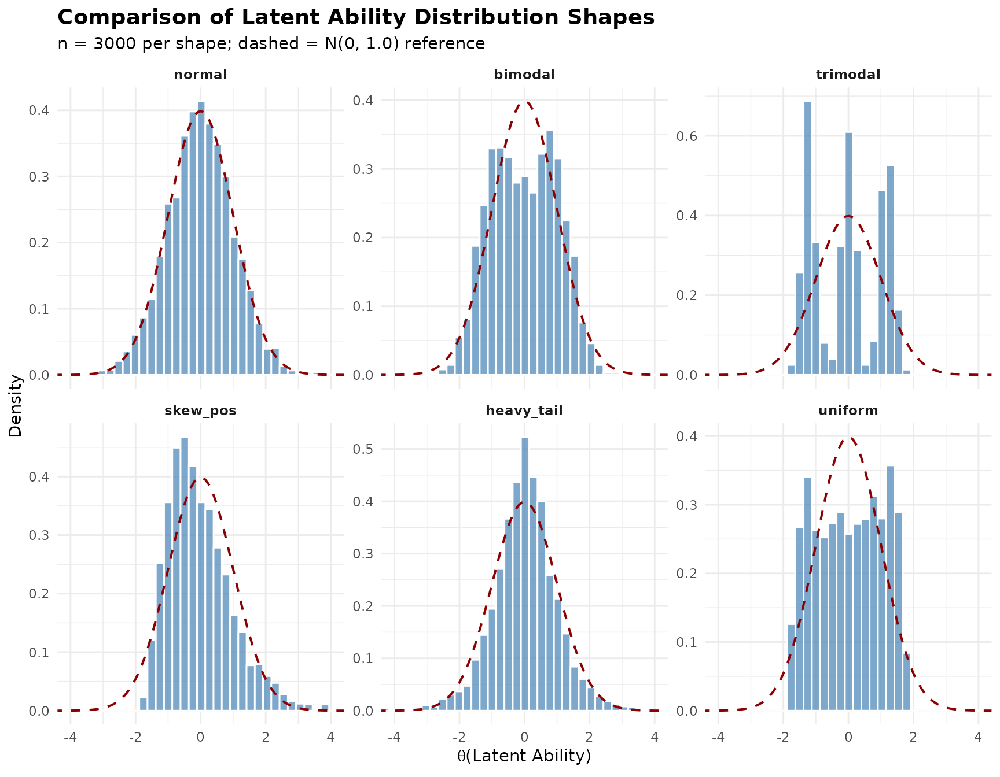
6. Custom Mixture Distributions
For maximum flexibility, use shape = "custom" with
mixture_spec:
# Define a custom 3-component mixture
sim_custom <- sim_latentG(
n = 2000,
shape = "custom",
mixture_spec = list(
weights = c(0.3, 0.5, 0.2), # Must sum to 1
means = c(-1.5, 0, 2), # Component means
sds = c(0.5, 0.7, 0.5) # Component SDs
),
seed = 1
)
plot(sim_custom, show_normal = TRUE)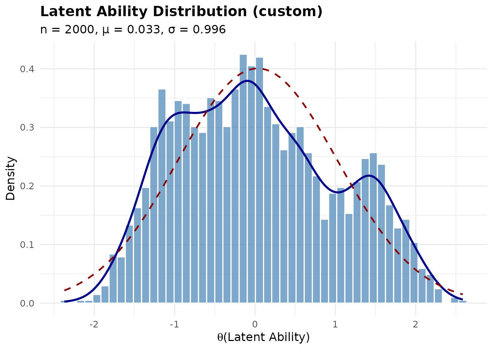
By default, custom mixtures are automatically post-standardized to have mean 0 and variance 1. To disable this:
# Keep raw mixture parameters
sim_raw <- sim_latentG(
n = 2000,
shape = "custom",
mixture_spec = list(
weights = c(0.5, 0.5),
means = c(-1, 1),
sds = c(0.5, 0.5)
),
standardize_custom = FALSE,
seed = 1
)7. Adjusting Location and Scale
The mu and sigma parameters allow you to
shift and scale the distribution:
# Generate abilities with mean 100 and SD 15 (like IQ scores)
sim_iq <- sim_latentG(
n = 1000,
shape = "normal",
mu = 100,
sigma = 15,
seed = 42
)
summary(sim_iq)
#> Summary: Latent Ability Distribution
#> ====================================
#> Shape : normal
#> n : 1000
#> Target : mu = 100.00, sigma = 15.00
#> Covariates : No
#>
#> Sample Statistics:
#> Mean : 99.6126
#> SD : 15.0378
#> Median : 99.8030
#> Skewness : -0.0038
#> Kurtosis : 0.1286 (excess)
#> Range : [49.4239, 152.4296]
#>
#> Quantiles:
#> 2.5% 5% 25% 50% 75% 95% 97.5%
#> 69.8816 75.3193 89.8681 99.8030 109.9601 123.0023 128.1655This works with any shape:
# Bimodal with different scale
sim_bimodal_scaled <- sim_latentG(
n = 1000,
shape = "bimodal",
mu = 0,
sigma = 1.5, # Larger spread
seed = 42
)
cat(sprintf("Sample SD: %.3f (target: 1.5)\n", sd(sim_bimodal_scaled$theta)))
#> Sample SD: 1.481 (target: 1.5)8. Adding Covariate Effects
You can incorporate person-level covariates that affect ability:
# Create covariate data
n <- 1000
set.seed(42)
group <- rbinom(n, 1, 0.5) # Binary group indicator
ses <- rnorm(n) # Continuous SES measure
# Generate abilities with covariate effects
sim_cov <- sim_latentG(
n = n,
shape = "normal",
xcov = data.frame(group = group, ses = ses),
beta = c(0.5, 0.3), # Group effect = 0.5, SES effect = 0.3
seed = 42
)
# Verify covariate effects
cat("Mean ability by group:\n")
#> Mean ability by group:
cat(sprintf(" Group 0: %.3f\n", mean(sim_cov$theta[group == 0])))
#> Group 0: -0.084
cat(sprintf(" Group 1: %.3f\n", mean(sim_cov$theta[group == 1])))
#> Group 1: 0.519
cat(sprintf(" Difference: %.3f (expected: 0.5)\n",
mean(sim_cov$theta[group == 1]) - mean(sim_cov$theta[group == 0])))
#> Difference: 0.602 (expected: 0.5)The full model is:
where is the covariate vector for person .
9. Working with the Output Object
The sim_latentG() function returns a
latent_G object containing:
sim <- sim_latentG(n = 100, shape = "bimodal", seed = 1)
# Available components
names(sim)
#> [1] "theta" "mu" "sigma" "eta_cov"
#> [5] "shape" "shape_params" "n" "sample_moments"
#> [9] "z"
# The theta vector
head(sim$theta)
#> [1] -0.5611365 0.4327842 -0.5953282 -1.4776179 1.6598142 0.3882399
# The standardized z values (before scaling)
head(sim$z)
#> [1] -0.5611365 0.4327842 -0.5953282 -1.4776179 1.6598142 0.3882399
# Sample moments
sim$sample_moments
#> $mean
#> [1] 0.005452304
#>
#> $sd
#> [1] 0.9591602
#>
#> $skewness
#> [1] -0.1115873
#>
#> $kurtosis
#> [1] -1.1091859.1 Extracting Theta for Other Uses
# Get theta as a numeric vector
theta_vec <- sim$theta
# Use in your own analysis
mean(theta_vec)
#> [1] 0.00545230410. Connection to IRT Framework
In the Rasch/2PL model, the latent distribution affects key quantities:
10.2 Expected Test Information
Different latent shapes produce different expected information profiles, even with identical item parameters.
10.3 Identifiability
For model identification in the Rasch model, we typically fix either:
- (location constraint), or
- (item constraint)
The sim_latentG() function generates abilities with mean
0 by default, supporting the first identification approach.
11. How Latent Shape Affects Achievable Reliability
Different latent shapes lead to different achievable reliability
ranges for the same test design. This section uses
check_feasibility() and rho_curve() to explore
this connection.
11.1 Feasibility Across Shapes
shapes_feas <- c("normal", "bimodal", "skew_pos", "heavy_tail", "uniform")
feas_results <- data.frame(
shape = character(), rho_tilde_min = numeric(), rho_tilde_max = numeric(),
rho_bar_min = numeric(), rho_bar_max = numeric(),
stringsAsFactors = FALSE
)
for (sh in shapes_feas) {
feas <- check_feasibility(
n_items = 25, model = "rasch", latent_shape = sh,
item_source = "parametric", M = 5000L, seed = 42, verbose = FALSE
)
feas_results <- rbind(feas_results, data.frame(
shape = sh,
rho_tilde_min = feas$rho_range_info[1],
rho_tilde_max = feas$rho_range_info[2],
rho_bar_min = feas$rho_range_msem[1],
rho_bar_max = feas$rho_range_msem[2],
stringsAsFactors = FALSE
))
}
knitr::kable(
feas_results,
col.names = c("Shape", "rho_tilde min", "rho_tilde max",
"rho_bar min", "rho_bar max"),
digits = 4,
caption = "Achievable reliability ranges across latent shapes (25-item Rasch)"
)| Shape | rho_tilde min | rho_tilde max | rho_bar min | rho_bar max |
|---|---|---|---|---|
| normal | 0.0591 | 0.9872 | 0.0002 | 0.9146 |
| bimodal | 0.0583 | 0.9834 | 0.0583 | 0.9722 |
| skew_pos | 0.0589 | 0.9864 | 0.0000 | 0.8804 |
| heavy_tail | 0.0581 | 0.9857 | 0.0000 | 0.8706 |
| uniform | 0.0595 | 0.9856 | 0.0595 | 0.9576 |
11.2 Reliability Curves Across Shapes
shapes_curve <- c("normal", "bimodal", "skew_pos", "heavy_tail")
curve_colors <- c("#2166AC", "#B2182B", "#4DAF4A", "#984EA3")
# Generate curves
all_curves <- list()
for (i in seq_along(shapes_curve)) {
all_curves[[i]] <- rho_curve(
n_items = 25, model = "rasch", latent_shape = shapes_curve[i],
item_source = "parametric", metric = "info",
M = 5000L, seed = 42, plot = FALSE
)
}
# Plot
plot(NULL, xlim = c(0.1, 5), ylim = c(0, 1),
xlab = "Scaling factor c", ylab = expression(tilde(rho)(c)),
main = "Reliability Curves by Latent Shape (25-item Rasch, info metric)")
for (i in seq_along(shapes_curve)) {
lines(all_curves[[i]]$c, all_curves[[i]]$rho_tilde,
col = curve_colors[i], lwd = 2)
}
abline(h = 0.80, col = "gray40", lty = 2, lwd = 1)
text(4.5, 0.82, expression(rho * " = 0.80"), cex = 0.8, col = "gray40")
legend("bottomright", legend = shapes_curve,
col = curve_colors, lwd = 2, cex = 0.8, bty = "n")
grid(col = "#CCCCCC")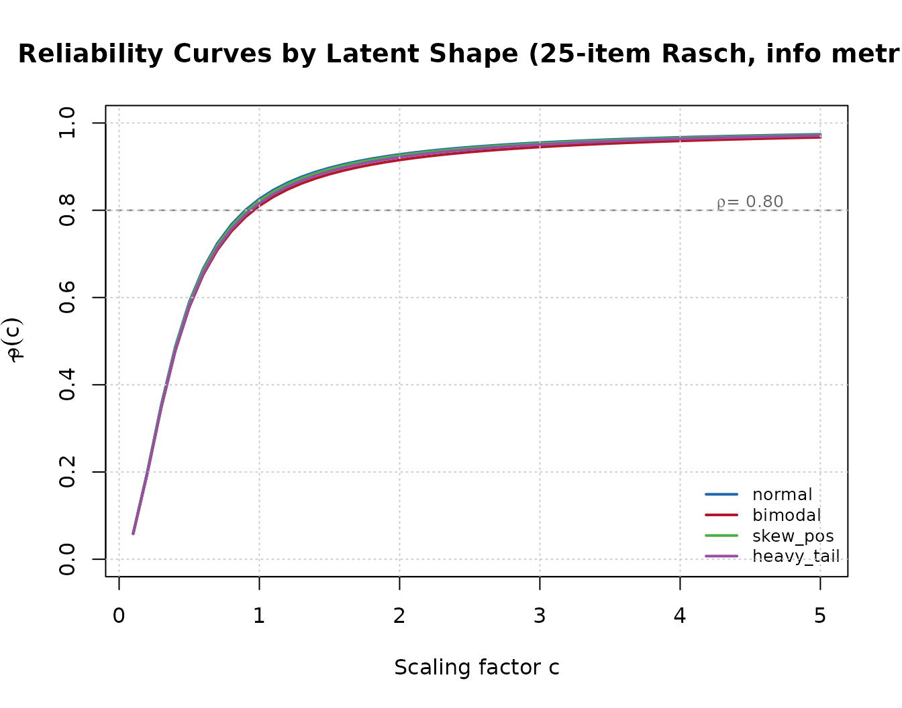
The figure shows that all shapes can reach high reliability, but some require larger scaling factors to compensate for the reduced average information when ability mass is spread away from the item difficulty region.
11.3 Calibrating Across Shapes
Use eqc_calibrate() with different
latent_shape arguments to see how the calibrated
differs:
shapes_cal <- c("normal", "bimodal", "skew_pos", "heavy_tail", "uniform")
cal_results <- data.frame(
shape = character(), c_star = numeric(),
achieved_rho = numeric(), stringsAsFactors = FALSE
)
for (sh in shapes_cal) {
res <- eqc_calibrate(
target_rho = 0.80, n_items = 25, model = "rasch",
latent_shape = sh, item_source = "parametric",
M = 5000L, seed = 42
)
cal_results <- rbind(cal_results, data.frame(
shape = sh, c_star = res$c_star,
achieved_rho = res$achieved_rho, stringsAsFactors = FALSE
))
}
knitr::kable(
cal_results,
col.names = c("Shape", "c*", "Achieved rho"),
digits = 4,
caption = "Calibrated c* by latent shape (target rho = 0.80, 25-item Rasch)"
)| Shape | c* | Achieved rho |
|---|---|---|
| normal | 0.8995 | 0.8 |
| bimodal | 0.9577 | 0.8 |
| skew_pos | 0.9132 | 0.8 |
| heavy_tail | 0.9365 | 0.8 |
| uniform | 0.9012 | 0.8 |
12. Using sim_latentG() with
eqc_calibrate()
When using sim_latentG() as part of reliability-targeted
simulation, specify the same parameters in
eqc_calibrate():
# Calibrate for a bimodal population
eqc_result <- eqc_calibrate(
target_rho = 0.80,
n_items = 25,
model = "rasch",
latent_shape = "bimodal",
latent_params = list(shape_params = list(delta = 0.8)),
M = 5000L,
seed = 42
)
# Generate response data with the same distribution
sim_data <- simulate_response_data(
result = eqc_result,
n_persons = 1000,
latent_shape = "bimodal",
latent_params = list(shape_params = list(delta = 0.8)),
seed = 123
)
cat(sprintf("Calibrated c* = %.4f, achieved rho = %.4f\n",
eqc_result$c_star, eqc_result$achieved_rho))
#> Calibrated c* = 0.9577, achieved rho = 0.8000
cat(sprintf("Response data: %d persons x %d items\n",
nrow(sim_data$response_matrix), ncol(sim_data$response_matrix)))
#> Response data: 1000 persons x 25 itemsFor the complete 6-step applied workflow, see
vignette("applied-guide").
13. Summary of Shape Parameters
| Shape | Parameter | Default | Range | Description |
|---|---|---|---|---|
bimodal |
delta |
0.8 | (0, 1) | Mode separation |
trimodal |
w0 |
1/3 | (0, 1) | Weight of central component |
m |
1.2 | > 0 | Location of side modes | |
multimodal |
m1 |
0.5 | > 0 | Inner mode locations |
m2 |
1.3 | > 0 | Outer mode locations | |
w_inner |
0.30 | (0, 0.5) | Weight of inner components | |
skew_pos/neg |
k |
4 | > 0 | Gamma shape (smaller = more skewed) |
heavy_tail |
df |
5 | > 2 | Degrees of freedom (smaller = heavier) |
floor |
w_floor |
0.3 | (0, 1) | Weight at floor |
m_floor |
-1.5 | < 0 | Floor location | |
ceiling |
w_ceil |
0.3 | (0, 1) | Weight at ceiling |
m_ceil |
1.5 | > 0 | Ceiling location |
14. Practical Recommendations
14.1 Choosing a Shape
| Research Question | Recommended Shape |
|---|---|
| Standard simulation | normal |
| Heterogeneous population | bimodal |
| Mixed ability levels |
trimodal or multimodal
|
| Selective samples |
skew_pos or skew_neg
|
| Robust estimation | heavy_tail |
| Easy/difficult tests |
ceiling / floor
|
| Sensitivity analysis | Compare multiple shapes |
14.2 Sample Size Considerations
For stable Monte Carlo estimates:
-
M = 10,000 or more for
eqc_calibrate()quadrature - n = 500–2,000 per replication for simulation studies
- Increase for heavy-tailed or highly multimodal shapes
14.3 Reproducibility
Always set a seed for reproducible results:
sim1 <- sim_latentG(n = 100, shape = "normal", seed = 42)
sim2 <- sim_latentG(n = 100, shape = "normal", seed = 42)
identical(sim1$theta, sim2$theta) # TRUE
#> [1] TRUE15. References
Lee, J. (2025). Reliability-targeted simulation of item response data: Solving the inverse design problem. arXiv preprint, arXiv:2512.16012.
Baker, F. B., & Kim, S.-H. (2004). Item Response Theory: Parameter Estimation Techniques (2nd ed.). Marcel Dekker.
Paganin, S., et al. (2023). Computational strategies and estimation performance with Bayesian semiparametric item response theory models. Journal of Educational and Behavioral Statistics, 48(2), 147–188.